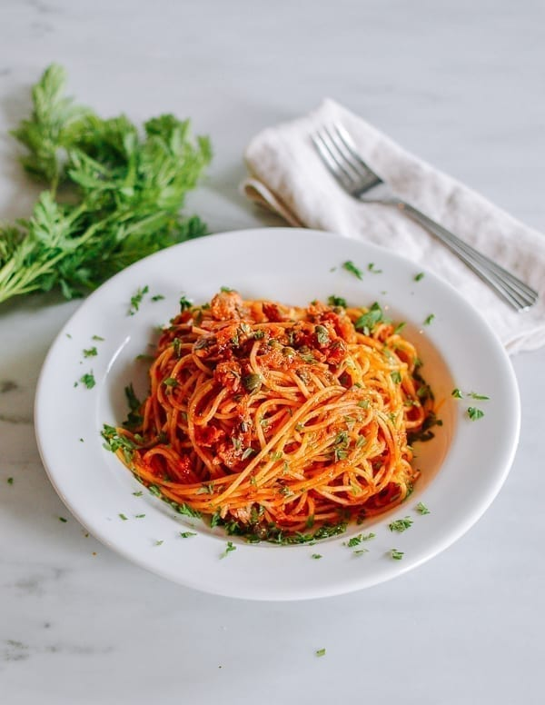

So today we're going to make a quick and easy tuna pasta Drain the tuna and start boiling water, once it starts boiling add salt and a portion of the pasta of your choice. For best results let it cook for 6-7 minutes. ( (Al dente ;) ) Once ready add tomate sauce and the tuna into a bowl and mix.
Once cooked it should look like this. 